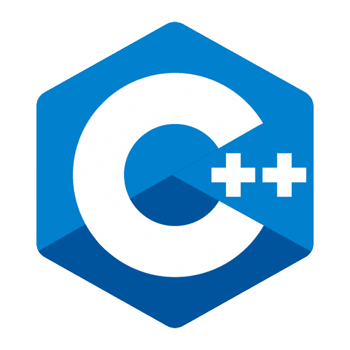
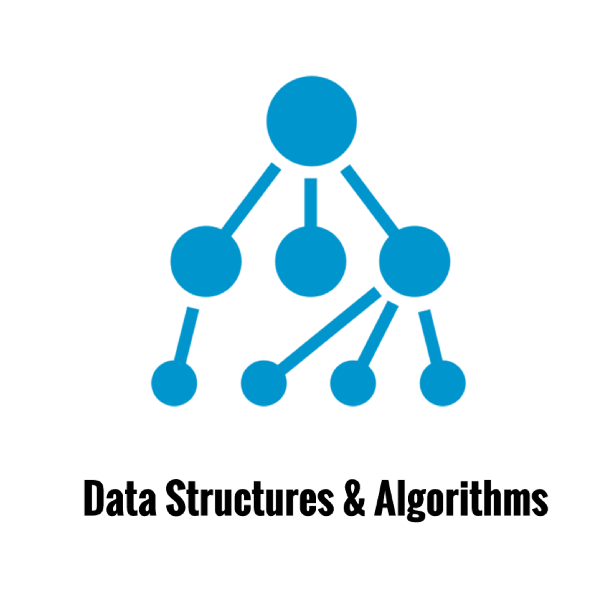

My Skills
C++ Programing

After studying C, I moved on to C++ because it offers a number of STL templates that make coding much simpler. I have practical knowledge with both C and C++ coding.
Data Structures

To improve my problem solving skills I am working on different data structures. Learning to Code Data Structures from scratch and then use STL for time efficiency.
Web Development

I recently started web development and found it very interesting.I am currently working on improving my skills in HTML5, CSS3 and Javascript.